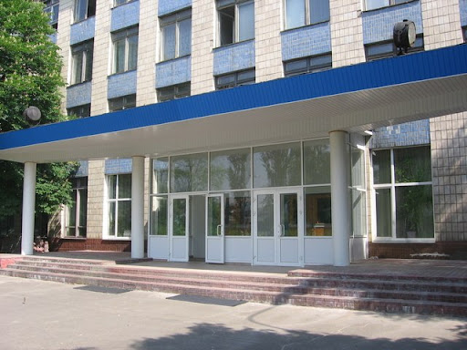
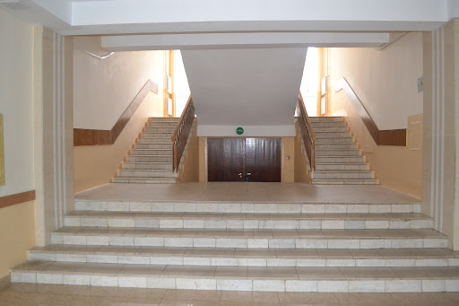

|
Біографія |
|
Народився в 2001 році, в місті Києві.
Неповну середню освіту отримав в Спеціалізованій школі І-ІІІ ступенів №255 з поглибленим вивченням природничо - математичних предметів. Навчання
Повну середню освіту отримав в Київському фаховому коледжі комп'ютерних
технологій та економіки НАУ.
Вчився в ньому з 2017 по 2021 рік. Після навчання отримав освітньо-кваліфікаційний рівень Молодшого спеціаліста. На даний момент навчається на 2 скороченому курсі (3 курсі) НАУ.


Даний веб-посібник був розроблений студентом групи СП-336Б
Зворотній зв'язок |